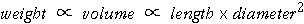
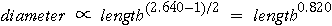
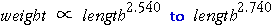
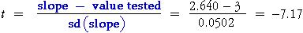

Implications About Shape of the Slugs
Our 95% confidence interval for the power does not include 3, suggesting that weight is not proportional to (length). This implies that the shape of the slugs changes as they get longer. To get a handle on this, we will assume that the weight of a slug is proportional to its volume and that the slugs are cylindrical. Their weight would then be proportional to

Since we estimated weight to be proportional to length raised to the power 2.640,

Slug diameter therefore seems to increase less than linearly with length — longer slugs are relatively thinner.
Testing Whether the Power is 3
From the 95% confidence interval above, we have seen that there is evidence that slug weight is not proportional to (length) but seems more likely to be proportional to

The 95% confidence interval for the power does not include 3, so we know that the p-value is < 0.05. However Minitab does not automatically provide a p-value for this test. The p-value in the Minitab output is
|
... Predictor Coef Stdev t-ratio p ... logLen 2.64043 0.05017 52.63 0.000 |
This is for a test of whether the power is zero and we conclude that there is extremely strong evidence that the power is not zero (and therefore that slug weight is related to length in some way). To get a p-value to test whether the power is 3, we need a little more work.
A t-ratio is first obtained by standardising the difference between the slope and 3.0 (i.e we divide this difference by the standard deviation of the slope from the Minitab output).

To assess whether this t-ratio is unusually far from zero, we compare its value to a t-distribution with n - 2 = 97 degrees of freedom. In Minitab, the probability of a t-ratio as low as -7.17 can be easily obtained by typing the 'CDF' command in the Session window:
|
MTB > CDF -7.17; SUBC> T 97. Cumulative Distribution Function Student's t distribution with 97 d.f. x P( X <= x) -7.1700 0.0000 |
Minitab reports the probability of a t-ratio as low as -7.17 to be '0.0000'. Since a t-ratio as high as 7.17 would be equally odd, we should double this probability to get a p-value for the test (i.e. we should do a 2-tailed test). However the p-value is still extremely close to zero, so we conclude that there is extremely strong evidence that the power is less than 3 — slug weight is not related to (length)3.